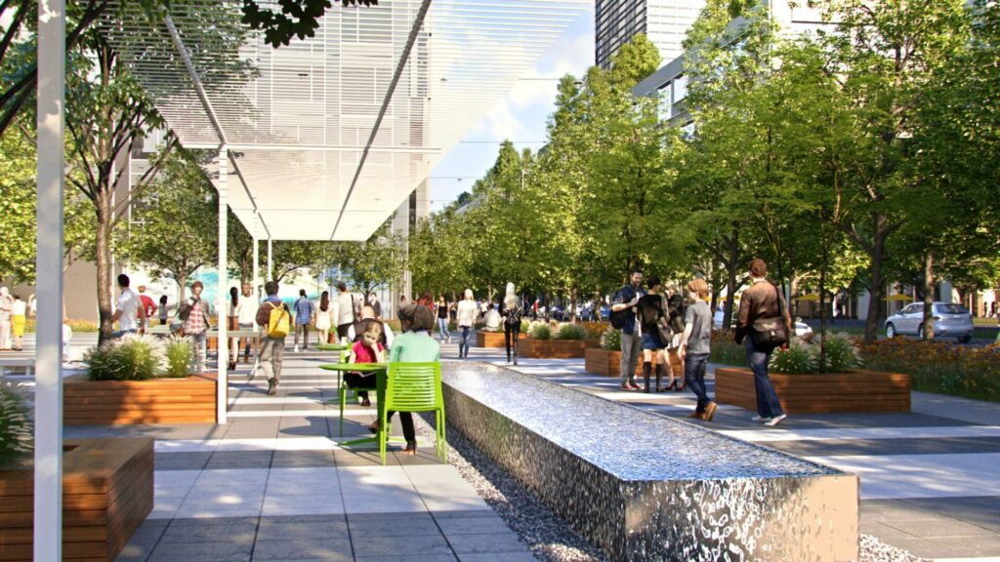

How Neighbors Help
Residents keep an eye on issues, plan gatherings, share what they know, and help good ideas move.
Committees
This is where neighbors help with safety, events, parks, transportation, and the everyday details that make downtown better.

Project Work
Neighbors can help follow public spaces, transportation, safety, communications, membership, and the small details that shape daily life.
Residents keep an eye on issues, plan gatherings, share what they know, and help good ideas move.
You do not need to know everything. Bring curiosity, a little time, and what you are seeing on your block.